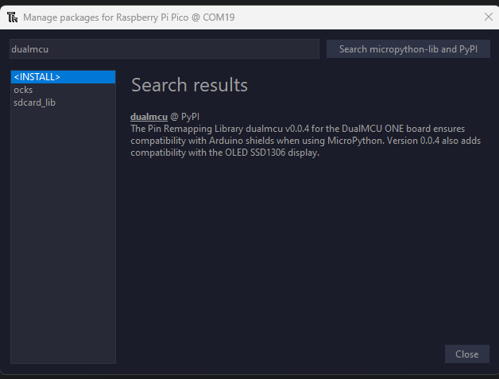
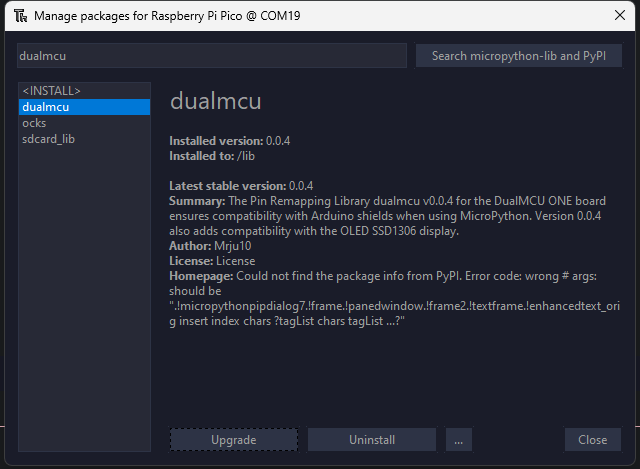

MicroPython#
MicroPython es una implementación ligera y eficiente de Python 3. Está optimizado para microcontroladores y entornos restringidos, lo que lo hace ideal para sistemas embebidos e IoT. Proporciona un conjunto amplio de bibliotecas y módulos para interactuar con hardware y periféricos.
Compatibilidad de Placas#
La siguiente tabla enumera las placas compatibles con MicroPython:
Nota
Para descargar MicroPython y obtener más información sobre su instalación en placas específicas, visite el sitio web oficial de MicroPython.
Placa |
Descripción y Recursos |
|---|---|
ESP32 |
Microcontrolador de bajo costo con Wi-Fi y Bluetooth, ideal para aplicaciones IoT. Amplio soporte y documentación. |
RP2040 |
Chip utilizado en Raspberry Pi Pico, perfecto para proyectos educativos y sistemas embebidos. |
STM32 |
Microcontroladores de alto rendimiento para aplicaciones en tiempo real (p. ej., STM32F4 y STM32F7). |
nRF52 |
Dispositivos de bajo consumo, adecuados para aplicaciones BLE, con soporte respaldado por ejemplos prácticos. |
Pyboard |
Placa oficial de MicroPython, diseñada específicamente para aprovechar las capacidades del lenguaje. |
Características Avanzadas#
MicroPython combina el rendimiento en dispositivos con pocos recursos con la versatilidad de Python 3. Entre sus principales características se destacan:
REPL interactivo para pruebas y depuración en tiempo real.
Bibliotecas optimizadas para el manejo de pines GPIO, I2C, SPI, UART, etc.
Eficiencia en el uso de recursos, ideal para microcontroladores.
Compatibilidad con gran parte del ecosistema Python.
Facilidad de integración y extensión para soluciones IoT y embebidas.
Sintaxis y Tipado en MicroPython#
La sintaxis de MicroPython es similar a Python 3, con tipado dinámico que facilita el desarrollo. A continuación, se presenta una comparativa de sus características:
Característica |
Descripción |
|---|---|
Sintaxis Simplificada |
Legibilidad y estructura claras, heredadas de Python 3. |
Tipado Dinámico |
No requiere declaración explícita de tipos. |
Optimización para Hardware Limitado |
Funciones adaptadas para minimizar el consumo de memoria. |
Amplia Compatibilidad |
Integración con gran parte del ecosistema y bibliotecas de Python. |
Más Información y Recursos#
Para profundizar en el uso de MicroPython se recomienda:
Revisar la documentación oficial en el sitio de MicroPython.
Participar en comunidades y foros especializados.
Utilizar recursos interactivos y cursos en línea que faciliten la adopción del entorno.
Comenzando con MicroPython#
Pasos para iniciar tu proyecto:
Descarga el firmware adecuado para tu placa desde el sitio oficial.
Truco
A continuación, se presentan enlaces directos a los firmwares de MicroPython para ESP32 y RP2040:
Placa |
Firmware |
|---|---|
ESP32 |
|
RP2040 |
Nota
Requerido para flashear el firmware en el ESP32 o esptools
Conecta tu dispositivo mediante usando Thonny o cualquier otro IDE compatible con MicroPython.
Consulta la documentación y ejemplos para crear aplicaciones embebidas, desde prototipos hasta soluciones IoT.
Bibliotecas y Módulos#
MicroPython ofrece un rico conjunto de módulos:
machine: Interacción con hardware (GPIO, I2C, SPI, UART, etc.).
network: Gestión de interfaces de red (Wi-Fi, Ethernet, etc.).
IDEs y Herramientas#
Entre las herramientas recomendadas para trabajar con MicroPython se encuentran:
Thonny: IDE sencillo y amigable, con soporte para MicroPython.
uPyCraft: IDE ligero que facilita la edición, transferencia de archivos y comunicación serial.
rshell: Herramienta de línea de comandos para gestionar archivos en la placa mediante conexión serial.
Guía de Instalación de Bibliotecas con MIP#
Nota
El soporte directo para mip en RP2040 no está disponible. Se utiliza la biblioteca mip para instalar la biblioteca max1704x.py.
Dispositivo ESP32.
IDE Thonny.
Credenciales de Wi-Fi (SSID y contraseña).
Para instalar la biblioteca max1704x.py, siga estos pasos:
Conecte a Wi-Fi ejecutando el siguiente código en Thonny:
import mip
import network
import time
def connect_wifi(ssid, password):
wlan = network.WLAN(network.STA_IF)
wlan.active(True)
wlan.connect(ssid, password)
for _ in range(10):
if wlan.isconnected():
print('Conectado a la red Wi-Fi')
return wlan.ifconfig()[0]
time.sleep(1)
print('No se pudo conectar a la red Wi-Fi')
return None
ssid = "tu_ssid"
password = "tu_contraseña"
ip_address = connect_wifi(ssid, password)
print(ip_address)
Instale las bibliotecas utilizando mip:
mip.install('https://raw.githubusercontent.com/UNIT-Electronics/MAX1704X_lib/refs/heads/main/Software/MicroPython/example/max1704x.py')
mip.install('https://raw.githubusercontent.com/Cesarbautista10/Libraries_compatibles_with_micropython/refs/heads/main/Libs/oled.py')
mip.install('https://raw.githubusercontent.com/Cesarbautista10/Libraries_compatibles_with_micropython/refs/heads/main/Libs/sdcard.py')
Biblioteca DualMCU#
Para trabajar con la placa DualMCU ONE se debe instalar la biblioteca DualMCU.
Instale Thonny desde el sitio web de Thonny.
En Thonny, vaya a Herramientas -> Administrar paquetes.
Busque
dualmcuy haga clic en Instalar.
{kind=link}

Biblioteca DualMCU#
Verifique la instalación visual en:
{kind=link}

DualMCU instalada correctamente#
Alternativamente, descargue la biblioteca desde dualmcu.py.
La biblioteca DualMCU proporciona herramientas para trabajar con la placa DualMCU ONE. Ejemplo de uso básico:
import machine
from dualmcu import *
i2c = machine.SoftI2C(scl=machine.Pin(22), sda=machine.Pin(21))
oled = SSD1306_I2C(128, 64, i2c)
oled.fill(1)
oled.show()
oled.fill(0)
oled.show()
oled.text('UNIT', 50, 10)
oled.text('ELECTRONICS', 25, 20)
oled.show()
Dualmcu: Herramientas para trabajar con la placa DualMCU ONE.
Ocks: Soporte para comunicación I2C.
SDcard-lib: Gestión de tarjetas SD.
Para más información y actualizaciones, visite el `repositorio de GitHub dualmcu`__.